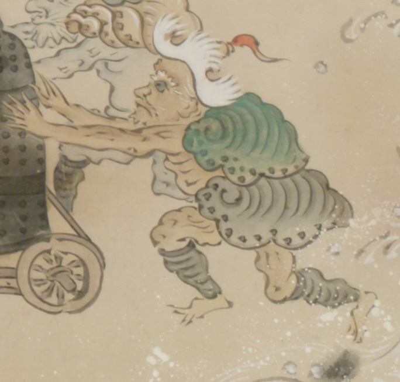

赤銅の鐘を載せた台車を後ろから押す化物。龍王の眷属。背中に緑色と灰色2枚の一枚貝を着け、赤い房のある白い帽子をかぶり、脚絆をつけている。鐘は、龍王より田原藤太へ贈られた無常院の鐘の音を写したもの。
著作者：英一蝶／出典：親書誌：U426_nichibunken_0094：田原藤太秀郷；タワラトウタヒデサト／日付：2008／資源識別子：U426_nichibunken_0094_0009_0001
Copyright (c)2010- International Research Center for Japanese Studies, Kyoto, Japan. All rights reserved.